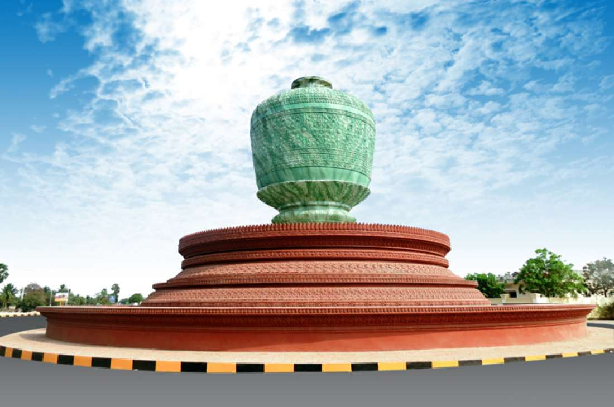

 ខេត្តពោធិ៍សាត់ជាខេត្តមួយនៅភាគខាងលិចនៃប្រទេសកម្ពុជា។ ខេត្តពោធិ៍សាត់មានទីរួមខេត្តនៅ ក្រុងពោធិ៍សាត់។ ខេត្តពោធិ៍សាត់គឺជាខេត្តមួយដែលសិ្ថតនៅក្នុងតំបន់បឹងទនេ្លសាប មានទីតាំងនៅទិសបចិ្ចមនៃប្រទេស។ ខេត្តពោធិ៍សាត់មានប្រជារាស្ត្រ ៣៦០ ៤៤៥ នាក់ ក្នុងនោះ ប្រុស ១៧២ ៨៩០ នាក់ ស្រី ១៨៧ ៥៥៥ នាក់ ។ ស្រ្តី ៥២,០ ភាគរយនៃប្រជារាស្ត្រសរុបក្នុងខេត្ត [២]។ ស្ថិតនៅភាគខាងលិចនៃប្រទេស និងមានព្រំប្រទល់ពីខាងជើងជាប់ខេត្តបាត់ដំបង បឹងទន្លេសាប ខាងលិចជាប់ខេត្តកំពង់ឆ្នាំង ខាងត្បូងជាប់នឹងខេត្តកំពង់ស្ពឺ ខេត្តកោះកុង និងខាងលិចជាប់នឹងប្រទេសថៃ។ ហើយក៏ស្ថិតនៅចន្លោះ បឹងទន្លេសាប និងចុងខាងជើងនៃជួរភ្នំក្រវាញ។ ទន្លេពោធិសាត់កាត់ខេត្តនេះហូរពីជួរភ្នំក្រវាញនៅភាគខាងលិចទៅទន្លេសាបខាងកើត។ ខេត្តនេះរួមមាន ៦ស្រុក ៧សង្កាត់ ៤២ឃុំ និង ៤៩៥ភូមិ ។ ប្រជារា្រស្តនៅក្នុងខេត្តនេះមាន ៣,២ភាគរយនៃប្រជារា្រស្តទូទាំងប្រទេសកម្ពុជា។ ដង់ស៊ីតេប្រជារា្រស្តរបស់ខេត្ត គឺ២៨ នាក់ ក្នុងមួយគីឡូម៉ែត្រការ៉េទាបជាង ដង់ស៊ីតេថ្នាក់ជាតិដែលមានតែ ៦៤នាក់ ក្នុងមួយគីឡូម៉ែត្រការ៉េ ។តាមពាក្យពីព្រេងនាយដំណាលថា មានដើមពោធិ៍មួយដើមរសាត់ច្រាសទឹកដ៏ប្លែកអស្ចារ្យ ឃើញដូច្នេះអ្នកស្រុកក៏នាំគ្នាយកខ្សែពួរទៅទាក់ចងតែមិនជាប់ ហើយបន្តរសាត់ដល់កន្លែងមួយត្រង់ខាងមុខទីប្រាសាទព្រះខ័ន។ រសាត់មកដល់ទីនេះ ព្រះសង្ឃ និងអ្នកស្រុក បានរៀបចំគ្រឿងពលីការបូជាទៀន ធូប ផ្កាភ្ញី ដោយអធិដ្ឋានបួងសួងសុំយាងដើមពោធិ៍ ដើម្បីប្រតិដ្ឋានដាំទុកនៅទីតាំងនោះ។ ព្រះសង្ឃបានយកខ្សែអំបោះ ៧សរសៃទៅចងដើមពោធិ៍ រួចប្រគំភ្លេងពិណពាទ្យថ្វាយដើមពោធិ៍ ស្រាប់តែដើមពោធិ៍នោះ ត្រូវបានអ្នកស្រុកអូសតាមជម្រាលដីឡើងច្រាំងខាងកើតប្រាសាទព្រះខ័ន បានដោយងាយ។ អ្នកស្រុកក៏ស្រែកអឺងកងឡើងថា "បានការ...បានការ" ហើយទួលនេះបានជាប់ឈ្មោះ "ទួលបានការ" តរៀងមក ដែលបច្ចុប្បន្នទួលនេះ ឋិតនៅខាងកើតវត្តបាកាន ក្នុងទឹកដីស្រុកបាកាន។ ដោយសារប្រាសាទព្រះខ័ន មានបារមីខ្លាំងពូកែ និងបួងសួងសុំកំណប់ទ្រព្យអ្វីបាននោះ ដំណឹងបានលេចឮដល់កងទ័ពសៀម ដែលនៅក្បែរព្រំដែនស្វាយដូនកែវ និងចង់មកជីកយកវត្ថុមានតម្លៃទាំងនោះ។ អ្នកស្រុក និងព្រះសង្ឃក៏នាំគ្នាលើកដីពូនលុបប្រាសាទ ក្នុងបំណងលាក់ទុកអាថ៌កំបាំងដោយយកដើមពោធិ៍ទៅដាំលើចំហៀងកូនភ្នំ និងប្ដូរឈ្មោះមកជា "បាកាន" វិញ ដែលបច្ចុប្បន្នគេហៅថា ស្រុកបាកាន។ ក្រៅពីខ្លឹមសារដកស្រង់ចេញពីសៀវភៅកម្ពុជសុរិយាឆ្នាំ២០០៣ ត្រង់ទំព័រ ៦២នេះ នៅក្នុងវចនានុក្រមសម្ដេចសង្ឃរាជ ជួន ណាត ត្រង់ទំព័រ ៧៧៩ បញ្ជាក់ថា ពោធិ៍សាត់ គឺជាឈ្មោះខេត្តមួយក្នុងកម្ពុជារដ្ឋ នៅជាប់ខាងកើតខេត្តបាត់ដំបង។ តាមពាក្យដំណាលពីព្រេងនាយថា មានដើមពោធិ៍តូចមួយរសាត់ច្រាសទឹកមកជាអស្ចារ្យប្លែក ហើយគេបានស្រង់យកទៅដាំនៅកន្លែងមួយ។ ដោយហេតុដូច្នេះ ទើបឲ្យឈ្មោះភូមិប្រទេសនោះថា ពោធិ៍សាត់ ព្រោះពាក្យថា រសាត់ និងសាត់ ជាពាក្យតែមួយអាចប្រើជួសគ្នាបាន។ លុះសំណេរជាយូរអង្វែងមក បានក្លាយជា "ពោធិ៍សាត់" រហូតដល់សព្វថ្ងៃ។